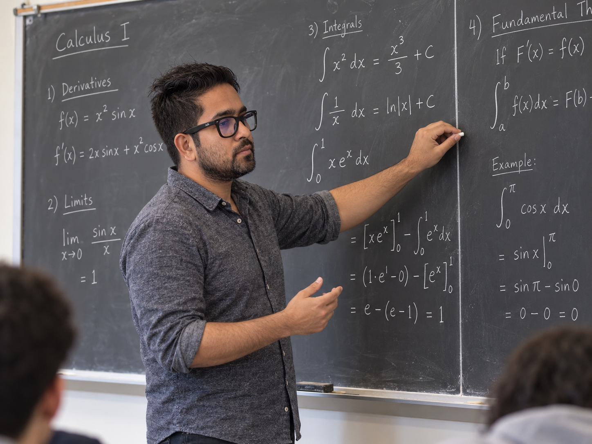

Teaching
|
My teaching spans calculus, differential equations, precalculus, algebra, trigonometry, and actuarial mathematics. I have served as an instructor of record, recitation instructor, lecture and laboratory teaching assistant, and grader at Florida State University and Youngstown State University. My classroom practice emphasizes clear mathematical reasoning, active problem solving, and helping students connect formal ideas with applications. |
 |
Student Testimonials
Selected anonymous comments from student course evaluations: Summer 2026, ODE class.
“He was always great. Communicated with the class to find the best teaching method and listened to his students’ needs. He provided plenty of example problems and prepared us perfectly for exams.”
“The practice test questions before each exam were very helpful for studying. He would spend the time to go through every little step in a problem if anyone in the class was not following along.”
“His digital notes were thorough, easy to read, and formatted beautifully. He encouraged questions and was approachable during and after class.”
“One of the best professor experiences I have had at FSU. Truly a great professor and an even better person.”
“You played a large part in convincing me that I am capable of learning difficult subjects. You built my confidence, and I will carry it through the rest of my courses.”
“I would rate his instructional methods 10/10 and can confidently say that this was the best mathematics course instruction I have received while at FSU.”
Teaching Experience
Calculus III
Iowa State University
This multivariable calculus course develops geometric and analytical understanding of vectors, vector-valued functions, functions of several variables, partial derivatives, multiple integrals, and vector calculus. In recitation meetings, I reinforce lecture material through guided examples, collaborative problem solving, and mathematical discussion. Students learn to translate geometric intuition into precise analytical techniques, compare solution methods, communicate their reasoning, and confidently develop effective strategies for multistep problems in two and three dimensions.
MAP2302 · Ordinary Differential Equations
Florida State University
This course introduces ordinary differential equations as models for evolving systems. Topics include direction fields; first-order methods; second-order linear equations; systems of equations; Laplace transforms; power-series solutions; and introductory numerical methods. Students learn to identify an equation’s structure, select suitable analytical or numerical techniques, verify solutions, interpret qualitative behavior, and connect equations with applications. The course balances procedural fluency with the mathematical reasoning needed to move between a model and its solutions.
MAC2312 · Calculus with Analytic Geometry II
Florida State University
Calculus II develops integration, approximation, and infinite-process techniques used throughout mathematics, science, and engineering. Using Single and Multivariable Calculus, 8th edition, the course covers techniques and applications of integration, differential equations, sequences, infinite series, power series, and Taylor series from Chapters 7–11. Students learn to choose suitable integration methods, analyze applied models, test convergence, approximate functions, and strengthen conceptual understanding through structured notes, worked examples, practice tests, and step-by-step discussion.
Fall 2025: Instructor of RecordSpring 2026: Instructor of Record
MAC2311 · Calculus with Analytic Geometry I
Florida State University
Calculus I introduces change, accumulation, and approximation for functions of one variable. Topics include limits and continuity, derivatives and rates of change, optimization, curve sketching, definite and indefinite integrals, the Fundamental Theorem of Calculus, and applications of integration. Through guided examples, active-learning problems, poster presentations, assessments, and targeted feedback, students develop conceptual reasoning and computational fluency while learning to interpret formulas and graphs, explain solution steps, and approach unfamiliar applied problems systematically.
Fall 2022: Recitation InstructorSpring 2025: Instructor of RecordSummer 2025: Instructor of Record
MAP4170 · Introduction to Actuarial Mathematics
Florida State University
Introduction to Actuarial Mathematics develops the financial mathematics foundation used in actuarial practice and professional examinations. Topics include accumulation and discount functions, nominal and effective interest rates, equations of value, annuities, loans, bonds, and related applications. Students learn to model cash flows across time, select consistent valuation dates, interpret financial quantities, and communicate solutions with appropriate notation and assumptions while connecting mathematical methods with actuarial practice, professional examinations, and independent study.
MAC1140 · Precalculus Algebra
Florida State University
Precalculus Algebra builds the function-based reasoning required for calculus and other quantitative courses. Topics include complex numbers; piecewise, polynomial, rational, exponential, and logarithmic functions; polynomial division and zeros; inequalities; inverse functions; and logarithmic equations. Through lecture, laboratory, and instructor-of-record responsibilities, I supported class activities, supervised assessments, and taught students from varied majors. Instruction emphasized multiple representations of functions, careful algebraic reasoning, interpretation of graphs and parameters, and applying foundational skills beyond memorized procedures.
Fall 2021–Spring 2022: Lecture and Laboratory Teaching AssistantSpring 2023: Instructor of Record
College Algebra and Trigonometry
Youngstown State University
These foundational courses prepare students for further study in mathematics, science, business, and other quantitative fields. College Algebra develops equations and inequalities, functions and graphs, polynomial and rational models, exponential and logarithmic relationships, and algebraic modeling. Trigonometry extends this foundation through angles, unit-circle definitions, functions and graphs, identities, equations, inverse functions, triangles, and periodic behavior. Instruction emphasizes clear notation, connections among symbolic, graphical, and numerical representations, and structured practice that builds confidence and independence.